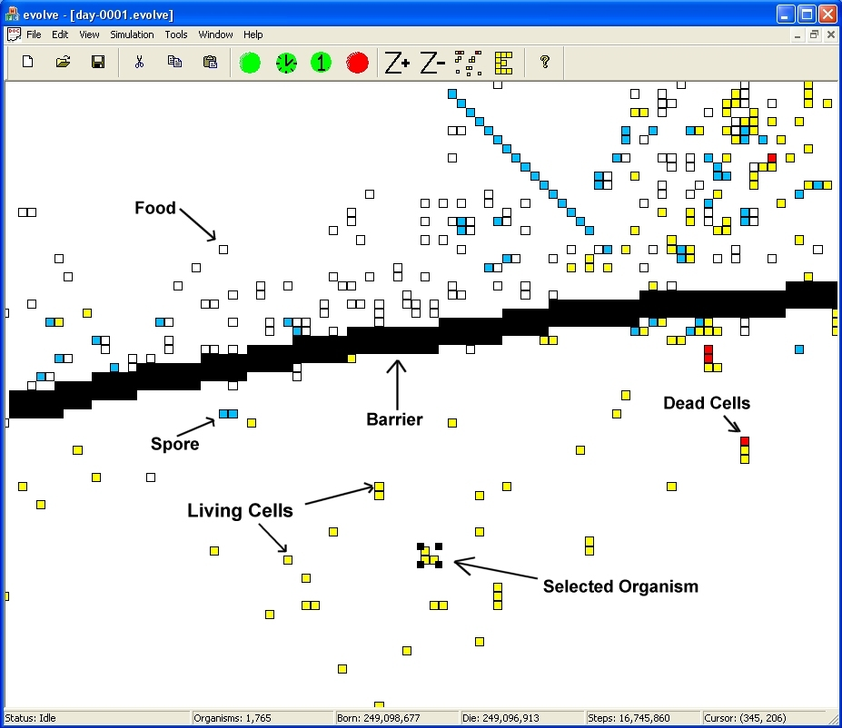
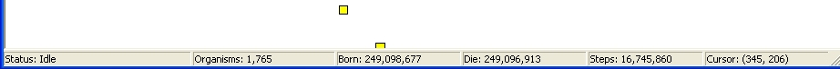
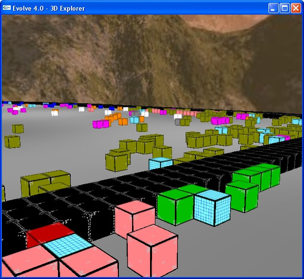
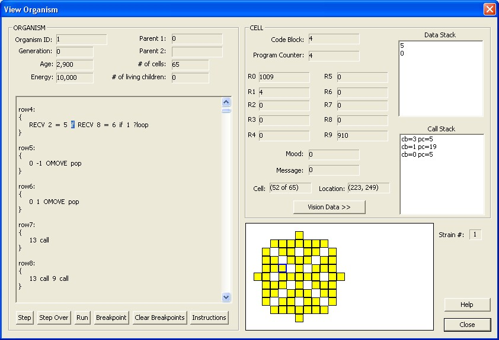
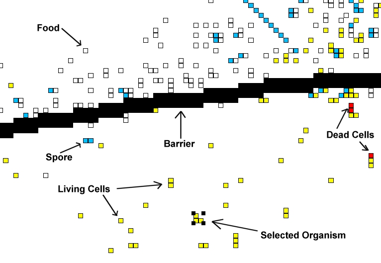
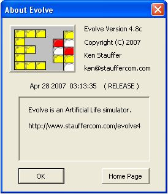

VOLVE 4.0
VOLVE 4.0
Overview

This shows a typical simulation window. The rest of the page describes various aspects of the Evolve application.
Toolbar

 - brings up the new simulation wizard, so you can create
a new simulation.
- brings up the new simulation wizard, so you can create
a new simulation.
 - open an existing simulation.
- open an existing simulation.
 - save current simulation.
- save current simulation.
 - cut selected organism (removes it from the current
simulation).
- cut selected organism (removes it from the current
simulation).
 - copy the selected organism to the clip board.
- copy the selected organism to the clip board.
 - paste the organism from the clip board into the current simulation.
- paste the organism from the clip board into the current simulation.
 - start the simulator (simulates a large number of steps and then
updates the display).
- start the simulator (simulates a large number of steps and then
updates the display).
 - start the simulator, but update the display after every step. Use this
mode to view the simulation in "real-time".
- start the simulator, but update the display after every step. Use this
mode to view the simulation in "real-time".
 - Simulate the universe 1 step.
- Simulate the universe 1 step.
 - stop the simulation.
- stop the simulation.
 - Zoom in. (mouse wheel can also be used)
- Zoom in. (mouse wheel can also be used)
 - Zoom out. (mouse wheel can also be used)
- Zoom out. (mouse wheel can also be used)
 - View all. Zoom all the way out and display entire universe.
- View all. Zoom all the way out and display entire universe.
 - Examine an organism. After selecting an organism, press this button
to examine the inner details of the organism.(View Organism).
- Examine an organism. After selecting an organism, press this button
to examine the inner details of the organism.(View Organism).
 - Launch the 3D Explorer program. The current simulation will
be viewable using a 3D first person perspective.
- Launch the 3D Explorer program. The current simulation will
be viewable using a 3D first person perspective.
 - Right Click Tool. Configure the behavior of the right mouse button.
See the section right click tools.
- Right Click Tool. Configure the behavior of the right mouse button.
See the section right click tools.
Status Bar

- Status: This shows the status of the simulation. When stopped the status
is "IDLE". When running a simulation the status is "RUNNING".
- Organisms: This is the number of organisms alive right now.
- Born: This is the total number of organisms that have lived.
- Die: This is the number of organisms that have died.
- Steps: This is the total number of simulation steps.
- Cursor: As the user moves the mouse pointer over the universe, this
is updated to reflect the actual (x, y) position the mouse is hovering over.
- Energy: If the mouse hovers over an organism, spore or organic material then the amount
of energy for that object is displayed next to the cursor position.
3D Explorer

Clicking on the the button will display this first person perspective
of your simulaton. You can even watch the simulation in real-time. (click
here to learn how to use the the 3D explorer).
Viewing Organisms
Next to the main simulation window, this is the second most important display in the simulator. You can view the entire state of any organism. Show here is an organism that consists of many cells. All cells share the same KFORTH program. However each cell has its own execution context (stack, registers, program counter, etc...). This means different cells and be executing different parts of the same genetic program. (like life on earth).
You can click on each cell to view its own individual state information. You can single step through an organism by clicking on 'Step'. Debugging features allow you to completely study how an organism works.
Vision Data

This dialog appears when you click on the [Vision Data >>] button from the previous dialog. This screen allows you to see the distances and types of objects that the cell is will "see" when it executes a vision related instruction (such as "LOOK").
Universe Properties

This dialog just summarizes the current state of the universe. It contains a useful set of statistics about the current simulation. Memory Usage computes how much RAM is being used internally to represent this simulation (all values in bytes). We use commas to display numbers, because they tend to get very large and this makes it easier to read them.
Also, Evolve uses 64-bit integers (instead of 32-bit), this effectively eliminates any possibility of integer overflow during an extended simulation run.
KFORTH Interpreter

This dialog lets you experiment with the KFORTH language. You can write simple programs and single step through them to see how KFORTH works. This dialog shows the source code and also how that source code is compiled (in the disassembly window).
The basic architecture of a KFORTH machine is a DATA stack and a CALL stack. Also each KFORTH machine has 10 general purpose registers ('R0' - 'R9'). Each data value is a signed 64-bit integer (in C/C++ this is known as a long long, or _int64 data type).
KForth Instructions Help

You can get help for all the KFORTH instructions (including the instructions used to control the organisms). This dialog is activated when the user clicks on the [INSTRUCTIONS] button.
New Simulation

This dialog is used to create a new simulation. The width and height configures the size of your universe. Seed is used to initialize the random number generator. This means that others can reproduce your results by using the same seed number (as well as the other initial settings from this dialog).
You can add 8 strains to a new simulation. Each strain has its own color, and you can see which strains succeed over time. Strains cannot interbreed.
The KFORTH program is the initial genetic program that the first organism starts out with. Energy is the amount of energy the universe will have. This number remains constant throughout the simulation.
Rather than a blank rectangle for your universe, the "Oval Barrier" will place a oval around the entire universe.
Mutations

This screen lets you configure the mutations rates. Mutations are broken down into several types. The percentage represents the probability that that type of mutation will occur during the birth of an organism.
The last step in creating a new organism is to pass its genetic program (inherited without mutations from one or two parents) through our mutation algorithm. This algorithm uses these percentages to determine the probability that one of these errors will be introduced into the new organisms genetic program.
Find Dialog

The find feature is a powerful tool for searching your simulation using complex criteria. (See Find Dialog to learn more).
Strain Population

This dialog shows the population of each strain in your simulation.
Key

- Living Cells: These are cells that are alive! They are part of an organism, and these
types of squares can move, look, eat, and generally do what living things do.
- Dead Cells: A cell that has just died will be colored red. Then it will either disappear
completely, or turn in to "food" (a white square).
- Selected Organism: By left clicking on a living cell the user can select an organism.
A selected organism can be copied, cut, pasted, or examined.
- Food: Food, or organic material is created when an organism is partially killed and
it remains are left behind. This decaying organic material contains energy and can be eaten.
- Spores: Organisms create spores in order to reproduce. In many cases the first spore
is created (shown here as a blue square), but the spore has not been fertilized yet. These spores
can be eaten, or another organism can place another spore in the same location, which will create
a new organism.
- Barrier: Barrier can be created by the user. Organisms cannot pass through them.
Barriers can be created to limit migration of organisms between different regions.
